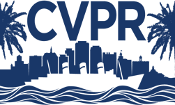

Curriculum Vitae
ATANU SANTRA
Date of Birth :20th July, 1988
Telephone (Landline/Mobile) : +91 9681821095, +91 7908050160 E-mail ID :bubunhhh@gmail.com, atanu.santra@ymail.com Career Objective : To acquire knowledge and apply in such a way that the society will get its benefit. Research Experience : 1) I have been working as a Project Liked Person (PLP) at Computer Vision and Pattern Recognition Unit (CVPR), Indian Statistical Institute (ISI), Kolkata, India since September 2021. 2) I have worked as a Project Liked Person (PLP) at Interdisciplinary Statistical Research Unit (ISRU), Indian Statistical Institute (ISI), Kolkata, India from March 2021 to May 2021. 3) I have worked as a Junior Research Fellow under Indian Space Research Organization/ Space Applications Centre (ISRO/SAC) sponsored project entitled “Studies on PVT capabilities and advantages of NavIC by utilization of existing NavIC and GNSS infrastructure” at The University of Burdwan, Burdwan, West Bengal, India from May, 2017 to March, 2020. Online Question Solving Experience : I have been working as an online Subject Matter Expert (SME) of Electrical Engineering subject at Chegg, an American education technology company for last sixteen months. Teaching Experience : I have been working as a Guest Lecturer at University Institute of Technology (UIT), Burdwan, West Bengal since December 2020. Educational background : 1) Pursuing PhD in Electronics and Communication Engineering in part time category at National Institute of technology (NIT), Sikkim with coursework SGPA 8.23. 2) M. Tech (Master of Technology) in Electronics and Communication Engineering (Microwaves) from The University of Burdwan, India in 2017 with DGPA 8.47 (77.2%). 3) B. Tech (Bachelor of Technology) in Electronics and Communication Engineering from West Bengal University of Technology, India in 2013 with DGPA 7.66 (69.1%). 4) Higher Secondary (10+2 years High School) from West Bengal Council of Higher Secondary Education in 2005 with 1st Division (67.2%). 5) Madhyamik (10 years secondary School) from West Bengal Board of Secondary Education in 2003 with 1st Division (84.125%). Project Work in Master of Technology (M.Tech) : Topic : Studies on emerging IRNSS as a component of Hybrid GNSS Operation. Abstract : Indian Regional Satellite Navigation System (IRNSS), developed by the Indian Space Research Organization (ISRO) is designed to provide PVT services in and around India. Since end of April, 2016, all the planned 07 satellites (03 GEOs and 04 IGSOs) are in orbit transmitting signals in L and S-band those can be used for PVT solutions. This study discusses on initial results on the capabilities of IRNSS in standalone and hybrid mode of operation with GPS, and advantages of IRNSS utilizing data collected from eastern part of India. This study also covers the graphic user interfaces of RTKLIB application programs over multi-GNSS (GPS, GLONASS and GALILEO) raw data. Duration : One year Project Guide : Dr. Anindya Bose, Scientific Officer (Selection Grade), The University of Burdwan. Project Work in Bachelor of Technology (B.Tech) : Topic : Stereo Preamplifier for car stereo application. Abstract : A preamplifier is an electronic amplifier that converts a weak electrical signal into an output signal strong enough to be noise tolerant and strong enough for further processing. Without this, the final signal would be noisy or distorted. They are typically used to amplify signals from analog sensors. Because of this, the preamplifier is often placed close to the sensor to reduce the effects of noise and interference. An ideal preamplifier will be linear, have high input impedance and low output impedance. It is used to boost the signal strength to drive the cable to the main instrument without significantly degrading the signal-to-noise ratio (SNR). Duration : One Year Project Guide : Dr. Swastika Chakraborty, HOD (ECE), JIS College of Engineering, Kalyani, INDIA. Languages Known : Bengali, Hindi and English Professional Training :1) Project based Training on “Embedded Technology” at CMC Academy. 2) One month vocational training on “VLSI Design and Simulation” at Ardent Computech Pvt. Ltd., Sector-I, Salt Lake, Kolkata – 64, INDIA. Software Skills : OS- Windows 7 and Linux; Languages- C & Python, HTML; Tools- Ansoft Student Version, HFSS, MATLAB and STK. Conference Attended : (i) Participated and presented a research work in “National Seminar on Materials Devices and Circuits in Communication Technology” (at Burdwan, India in 2016 and 2018) (ii) Participated in a Seminar on “GNSS Aids and Application” (at Kolkata, India in 2016) (iii) Participated and presented research work in “International Conference on Recent Trends on Electronics & Computer Science” (Silchar, India in 2019) (iv) Financial support on Travel, Visa and Registration Fees have been approved by Science and Engineering Research Board (SERB), Department of Science and Technology (DST), Government of India to participate and present a research work in “20th Beacon Satellite Symposium” (Olsztyn, Poland in 2019). (v) URSI Regional Conference on Radio Science, IITBHU, Varanasi, India, 2020 (vi) Space science and technology Learning program by Indo Science Education Trust, Pune, 2020 (online mode) Workshop Attended : (i) GNSS Summer School 2018, organized by The Institute of Positioning, Navigation and Timing of Japan from 30/07/2018 to 04/08/2018 at Tokyo University of Marine Science and Technology, Tokyo, Japan under scholarship scheme funded by “Japan Science and Technology Agency (JST)” (ii) Workshop on Recent Advances in Engineering Science and Technology, jointly organised by NIT Sikkim and INAE Kolkata Chapter at Sikkim during 1-5 March 2020. Invited Lecture : Global Navigation Satellite Systems (GNSSs) and their applicability organized by JLD College of Engineering and Management, Baruipur, WB on 04/09/2020 Subject of Interest : Global Navigation Satellite System, Digital Signal Processing, Computational Electromagnetics, Computer Networks Member of Professional Society : (i) Associate member of The Institution of Electronics and Telecommunication Engineers (IETE); Membership No.- AM500942. (ii) Treasurer of IETE Burdwan Sub-centre (iii) Corresponding member of URSI GATE : GATE (EC) 2015 Score: 371; AI rank: 15851 List of Publications (Total is 33) : 1. Journal: (a) Science Citation Index (SCI) : (i)Augmentation of GNSS utility by IRNSS/ NavIC constellation over the Indian region, A. Santra, S. Mahato, S Mondal, S. Dan, P. Verma1, P Banerjee and A. Bose, Elsevier-Advances in Space Research, https://doi.org/10.1016/j.asr.2018.04.020 (ii) “Potential of IRNSS/NavIC L5 Signals for Ionospheric Studies”, A.K. Sharma, O.B. Gurav, A. Bose, H.P. Gaikwad, G.A. Chavan, A. Santra, S.S. Kamble and R.S. Vhatkar, 2019, Elsevier-Advances in Space Research, https://doi.org/10.1016/j.asr.2019.01.029 (iii) “NavIC performance over the service region: availability and solution quality”, Sukabya Dan, Atanu Santra, Somnath Mahato and Anindya Bose, S?dhan? 45, 144 (2020). https://doi.org/10.1007/s12046-020-01375-5 (iv) “Visibility Anomaly of GNSS Satellite and Support from Regional Systems", Somnath Mahato, Atanu Santra, Sukabya Dan, Pratibha Verma, P Banerjee1 and Anindya Bose, Current Science, vol. 119, no. 11, 10 December 2020, doi: 10.18520/cs/v119/i11/1774-1782 (v) “Point Positioning Capability of Compact, Low-Cost GNSS Modules: A Case Study”, Somnath Mahato, Atanu Santra, Sukabya Dan, P Banerjee, Surajit Kundu and Anindya Bose, IETE Journal of Research, June 2021, https://doi.org/10.1080/03772063.2021.1939801 (b) Emerging Sources Citation Index (ESCI): (i) “Precision of Satellite Based Navigation Position Solution: a Review using NavIC”, A. Santra, S. Mahato, S. Dan and A. Bose, Journal of Information and Optimization Sciences, Volume 40, Issue 8, pp 1683-1691, 2019, https://doi.org/10.1080/02522667.2019.1703264 (ii) “GSLP: A GNSS Satellite Visibility Simulation Tool”, S. Dan, A. Santra, S. Mahato, P. Rakshit and A. Bose, Journal of Information and Optimization Sciences, Volume 40, Issue 8, pp 1753-1761, 2019, https://doi.org/10.1080/02522667.2019.1703267 (iii) “A GNSS-enabled Multi-Sensor for Agricultural Applications”, S. Mahato, P. Rakshit, A. Santra and A. Bose, Journal of Information and Optimization Sciences, Volume 40, Issue 8, pp 1763-1772, https://doi.org/10.1080/02522667.2020.1714893 2. Book chapter: (i) “An Integrated GNSS–Microcontroller–GSM System for Various Application Developments”, Sujoy Mandal, Koushik Samanta, Basudev Das, Atanu Santra and Anindya Bose, Advances in Communication, Devices and Networking: Proceedings of ICCDN 2017, Sikkim, pp 641-649, https://doi.org/10.1007/978-981-10-7901-6_70 3. Conference: (i) “Advantages and Performance of IRNSS in Hybrid Operation: Initial Results”, Anindya Bose, Sujoy Mandal, Koushik Samanta, (Ms) Debipriya Dutta, Suvro Kundu and Atanu Santra, 8th Multi GNSS Asia (MGA) Conference, Metro Manila, Philippines, 14-16 November, 2016, pp 44 - 45 (ii) “Initial Results of IRNSS Standalone and Hybrid Operations”, Anindya Bose, Sujoy Mandal, Koushik Samanta, (Ms) Debipriya Dutta, Suvro Kundu and Atanu Santra, United Nation-Nepal Workshop on GNSS, Kathmandu, Nepal, 12-16 December, 2016, pp 16-17; Available online http://www.unoosa.org/pdf/icg/2016/nepal-workshop/ABSTRACTS.pdf (iii) “Recent GNSS Observations with GALILEO Initial Operation”, Suvro Kundu, Atanu Santra, Debipriya Dutta and Anindya Bose, National Seminar on Recent Trends on Condensed Matter Physics including Laser Applications (NSCMPLA-2017), The University of Burdwan, Burdwan, India, 08-09 March, 2017. (iv) “An Experimental Study on Clock Stabilization of IRNSS-GPS-SBAS (IGS) Receiver”, S. Mahato, A. Santra, S. Dan, P. Banerjee and A. Bose, International Conference on New Frontiers of Engineering, Science, Management and Humanities 2017, Chandigarh, pp. 201-204, 9 December 2017. (v) “Performance Analysis of IRNSS-GPS Hybrid Operation: Study in Indian Metropolis Environment”, Atanu Santra, Somnath Mahato, Sukabya Dan, Pratibha Verma, P. Banerjee and Anindya Bose, IEEE conference: IEEE Xplore Digital Library (SPIN 2018), DOI: 10.1109/SPIN.2018.8474183. (vi) "Preliminary Observation of IRNSS/ NavIC Signals for Atmospheric Studies", Sukabya Dan, Atanu Santra and Anindya Bose, Proc. National Conference on Materials, Devices and Circuits for Communication Technology (MDCCT 2018) (ISBN 978-81-888391-55-4), The University of Burdwan, Burdwan, India, 22 - 23 June, 2018, pp. 53-56. (vii) "GNSS Usability under Forest Canopy on Indian Road: a Study", Somnath Mahato, Atanu Santra, Pratibha Verma, Sukabya Dan and Anindya Bose, Proc. National Conference on Materials, Devices and Circuits for Communication Technology (MDCCT 2018) (ISBN 978-81-888391-55- 4), The University of Burdwan, Burdwan, India, 22 - 23 June, 2018, pp. 57-60. (viii) "Cost-effective, Compact GNSS Data Logger using Raspberry Pi", Raisa Bhandari, Atanu Santa, Amit Roy and Anindya Bose, Proc. National Conference on Materials, Devices and Circuits for Communication Technology (MDCCT 2018) (ISBN 978-81-888391-55-4), The University of Burdwan, Burdwan, India, 22 - 23 June, 2018, pp. 69-72. (ix) "A Study using Multi-GNSS Services in Indian Semi-Urban Environment", Atanu Santra, Somnath Mahato, Prasenjit Ghosh, Sukabya Dan and Anindya Bose, Proc. National Conference on Materials, Devices and Circuits for Communication Technology (MDCCT 2018) (ISBN 978-81- 888391-55-4), The University of Burdwan, Burdwan, India, 22 - 23 June, 2018, pp. 77-80. (x) “On Time-dependent GNSS satellite visibility Problem from High Elevation Angles and NavIC Contribution,” A. Bose, S. Mahato, A. Santra, S. Dan and P. Verma, 10th Multi-GNSS Asia Conference 2018, Melbourne, 23-25 October 2018. (xi) “Low-cost GNSS Receivers for Geodetic Applications,” S. Mahato, A. Santra, R. Mondal, S. A. khan, S. Dan and A. Bose, National Level Conference on the Application of Geospatial Technology in Research and Development, Kolkata, pp. 31-32, 27-28 December 2018. (xii) “Low-cost GNSS modules for Precise Positioning,” S. Mahato, A. Santra, S. Dan and A. Bose, International Conference on Range Technology, Chadipur, 15-17 February 2019. (Accepted) (xiii) “Preliminary Results on the Performance of Cost-effective GNSS Receivers for RTK,” S. Mahato, A. Santra, S. Dan, P. Rakshit, P. Banerjee and A. Bose, URSI Asia-Pacific Radio Science Conference, New Delhi, 09-15 March 2019, https://doi.org/10.23919/URSIAP-RASC.2019.8738736 (xiv) “A Cost-effective GNSS data Collection and Analysis Technique using Raspberry Pi”, A. Roy, A. Santra, S. Mahato, S. Dan, A. Nandi and A. Bose, International Conference on Recent Trends on Electronics & Computer Science (ICRTECS 2019), NIT Silchar, Silchar, 18-19 March 2019 (Accepted) (xv) “On Use of Small Form Factor GNSS Module and RTK”, Somnath Mahato, Atanu Santra, Sukabya Dan, Partha Rakshit and Anindya Bose, 2nd treasure workshop, toulouse, 21-22 may 2019. (xvi) “GLONASS: Present and Future”, Shreya Sarkar Somnath Mahato, Atanu Santra and Anindya Bose, United Nations/ Fiji Workshop 24 - 28 June,2019. (xvii) “Low Cost, Compact GNSS Modules for Atmospheric Probing”, Anindya Bose, Atanu Santra, Somnath Mahato and Sukabya Dan, 20th International Beacon Satellite Symposium, University of Warmia and Mazury, Olsztyn, Poland, 19 - 23 August 2019 (xviii) “A Low-cost Approach towards Ionospheric Probing Using Compact GNSS Receiver”, Atanu Santra, Sukabya Dan, Somnath Mahato, P Banerjee, Surajit Kundu, Anindya Bose, URSI Regional Conference on Radio Science, Varanasi, India, 2020. DOI: 10.23919/URSIRCRS49211.2020.9113577 (xix) “Low Cost GNSS Receiver RTK Performance in Forest Environment”, Somnath Mahato, Gopal Shaw, Atanu Santra, Sukabya Dan, Surajit Kundu, Anindya Bose, URSI Regional Conference on Radio Science, Varanasi, India, 2020. DOI: 10.23919/URSIRCRS49211.2020.9113621 (xx) “Compact, Low-cost, Single-frequency NavIC Receiver Development”, Partha Rakshit, Sukabya Dan, Basudeb Das, Atanu Santra, Somnath Mahato, Anindya Bose, URSI Regional Conference on Radio Science, Varanasi, India, 2020. DOI: 10.23919/URSIRCRS49211.2020.9113575 (xxi) “GNSS Positioning capability of Android based Smartphones: A Study”, Somnath Mahato, Atanu Santra, Sukabya Dan, Partha Rakshit, and Anindya Bose, 4th Annual GNSS Raw Measurement Taskforce Workshop, Online WebEx, 27 – 28 May, 2020, https://www.gsa.europa.eu/sites/default/files/expo/4.3_anindya_bose_-_uni_of_burdwan.pdf, DOI: https://doi.org/10.13140/RG.2.2.15405.10721 (xxii) “IRNSS/ NavIC for self-reliance in geospatial applications and cartography”, Anindya Bose, Somnath Mahato, Sukabya Dan, Atanu Santra and Partha Rakshit, 40th INCA International Conference on Digital Mapping in Make India Initiatives, Kolkata, India (xxiii) “Compact, Low-cost GNSS Modules for Precise Point Positioning”, A. Bose, S. Mahato, S. Dan and A. Santra, E3S Web of Conferences (Vol. 310, p. 03001), EDP Sciences, October 2021, https://doi.org/10.1051/e3sconf/202131003001 (xxiv) “Ionospheric Effect on position solution accuracy using NavIC”, Debipriya Dutta, Somnath Mahato, Sukabya Dan, Atanu Santra, P. Banerjee, Anindya Bose, 2021 2nd International Conference on Range Technology (ICORT), Chandipur, Balasore, India, 5-6 Aug. 2021, 10.1109/ICORT52730.2021.9582070 Personal Details : Father’s Name: Narayan Chandra Santra, Mother’s Name: Kalpana Santra, Gender: Male, Hobbies: Solving mathematical problems, Gym, Playing cricket Researchgate Profile Link https://www.researchgate.net/profile/Atanu-Santra LinkedIn Profile Link https://www.linkedin.com/in/atanu-santra-081b0851/ 